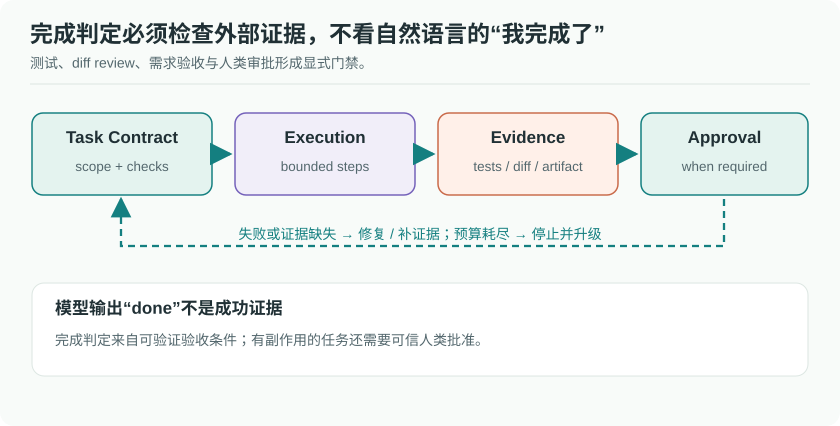
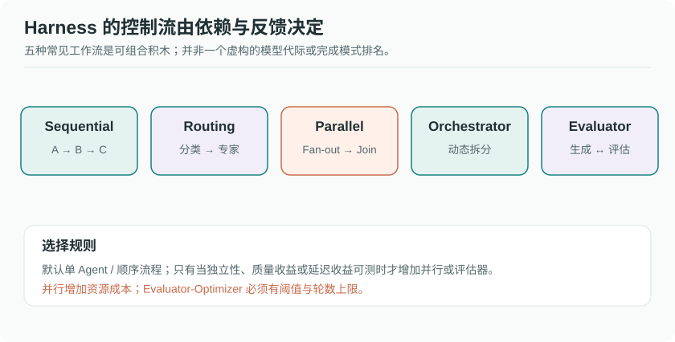

Agent Harness 设计：控制流、完成契约与评估循环
不再依赖模型自称完成或无证据的模型排行榜；从工作流选择、验收证据、人工审批和有界评估循环构建可靠执行控制面。
为什么“模型说完成”不能作为任务完成协议
Agent 可以输出“已修复”，却没有运行测试；可以声称“已更新三个文件”，实际 diff 只修改了一个；也可以执行所有工具后仍遗漏用户的验收条件。语言模型的结束标记是一次模型响应的控制信号，不是外部世界中任务成功的证明。
可靠 Harness 要将用户目标转成一个可检查的 Task Contract：明确交付范围、验收条件、允许副作用、预算与必须由人确认的节点。完成状态由证据驱动，而不是通过“done”“finished”这类自然语言正则猜测。

先选择控制流，再决定是否需要多 Agent
Anthropic 的公开工作流指南将常见模式归纳为顺序、并行、评估器—优化器等可组合结构，并在其他指南中讨论 Routing 与 Orchestrator-Workers。不同模式解决不同的问题，不存在一个对所有模型和任务都最优的 Finish Pattern。

| 模式 | 适用条件 | 主要代价 |
|---|---|---|
| Sequential / Prompt Chaining | 步骤有明确依赖 | 串行延迟、阶段间信息损失 |
| Routing | 任务类别可识别，专家边界清晰 | 分类误差与维护路由表 |
| Parallel / Fan-out | 子任务独立或需要多视角 | 并发成本、冲突归并 |
| Orchestrator–Workers | 子任务要根据中间结果动态拆解 | 协调与上下文归并复杂 |
| Evaluator–Optimizer | 结果能按稳定标准反复评估 | 额外模型调用与迭代预算 |
推荐默认从单 Agent 和最简单的顺序流程开始；只有当独立性、质量提升或延迟收益在任务集上得到测量，才增加更多层次。
显式完成契约：要求哪些证据才能标记 ready
对代码修改任务，契约可以要求：目标测试通过、静态检查通过、diff 已审查、没有越权副作用、必要时由人确认部署。每一项必须有可引用的证据，例如测试报告、提交 SHA、审查记录或审批事件。若某项失败，Agent 应继续修复或说明阻塞；预算耗尽时必须停止并升级，不能自动将“尝试过”改写成“完成”。
contract = TaskContract(
required_checks=("unit_tests", "diff_review"),
max_steps=8,
requires_human_approval=True,
)
gate = CompletionGate(contract)
gate.record_check("unit_tests", True, "pytest: 42 passed")
gate.record_check("diff_review", True, "review: no blocking findings")
print(gate.decide()) # await_approval
gate.record_human_decision(True, actor="human")
print(gate.decide()) # ready这里的 ready 代表满足契约，并不等于已经部署、合并或向外部系统写入。外部副作用仍由独立的审批和执行流程负责。
Evaluator–Optimizer 必须有可测标准和停止条件
评估器的价值取决于评分标准是否稳定、是否能预测用户真正关心的质量。代码任务可以采用测试结果、类型检查、静态分析、变更范围、性能回归和人工抽检；文档任务可以检查引用覆盖、术语一致性和事实准确性。不能用“另一个模型觉得更好”作为唯一验收标准。
迭代必须有轮数上限、质量阈值、每轮记录与人工升级路径。若评估分数没有改善，继续重写只会增加成本。测试集与开发集应分离，避免为了通过同一组例子而过拟合。
从旧稿中移除的三个错误结论
- 没有可靠依据将 Claude Code 的完成逻辑归纳成“Implicit Finish 代际”，更不能推断它对某一模型家族天然可靠。
- 未找到能核实旧稿所列
Self-Optimizing Agent Harnesses、ArXiv 编号和+7.7指标的可靠一手出处，因此不再引用。 - 没有可靠出处支撑旧稿中 Arize 2026 年多模型 Finish Benchmark 的表格。本文不复述这些准确率、Token 消耗和假完成次数。
本章采用公开的工作流模式和可运行的教学门禁，不推测 Claude Code 私有内部实现。
运行验收门禁与边界测试
源码见 examples/completion_gate.py。测试覆盖缺少证据、测试失败、人类批准、拒绝、最大步数与评估循环耗尽：
python3 -m unittest examples.test_completion_gate -vcontinue。参考资料
- Anthropic: Common workflow patterns — Sequential、Parallel、Evaluator-Optimizer 及权衡
- Anthropic: Building effective agents — Prompt chaining、Routing、Parallelization、Orchestrator-Workers、Evaluator-Optimizer
- OpenAI: Harness engineering — 环境、规范、验证、反馈和代码库可读性
- Claude Code Agent SDK — 公开 Agent Loop、Hooks、权限与会话接口